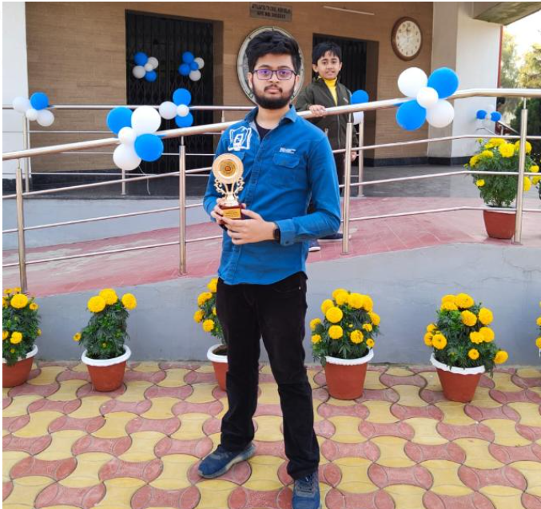

Welcome to our student discussion blog. Here we share our opinions regarding the online question papers available in the Question Bank.
| Photograph | Name | Department | Comment |
|---|---|---|---|
| K. Uday Kumar | Computer Science | The DBMS question paper was well balanced. Most questions were conceptual and helped revise SQL. | |
|
 |
Prantik Kundu | Computer Science | The Introduction to Computing paper was easy. The MCQs were straightforward and covered basic concepts. |
| Swapneel Sarkar | Computer Science | Some DBMS questions were tricky, especially normalization and transaction management. |
| Subject | Difficulty |
|---|---|
| Introduction to Computing | Easy |
| Database Management System | Medium |
| Web Technology | Medium |
Overall Feedback: The Question Bank is useful for exam preparation. It contains important conceptual questions and objective questions which improve problem-solving skills.
Sample discussion video by our group regarding the difficulty level of the question papers.
Prepared by: Group Members - B.Tech CSE